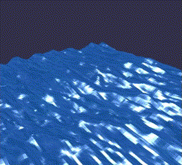

About Me
My name is Aly Ashour, and I'm an engineer.
I live to work with computers and technology and odds are if it's metal or silicon I want my hands on it.
I write lots of code and chew on cables and keyboards both on my own and on any team that'll let me in
(and even some that don't).
Passions
I love learning. In any flavour. Classes, courses, videos, books. In a perfect world I'd finish my degree and run right back in for another again and again until I'd tried everything. I want to know how everything works, all the way down. I'm also an occasional teacher. I've tutored math and physics for 5 years and give lectures on computer science for students through my club at Western.
Besides that I adore space, physics, and ancient history, I play chess, some video games, football (not the american one), and if I had one wish I'd give everyone the chance to look through a telescope.
Projects
Gerstner Waves Water Shader w/ C++ and OpenGL
Marching Cubes Surface Extraction

See more here!